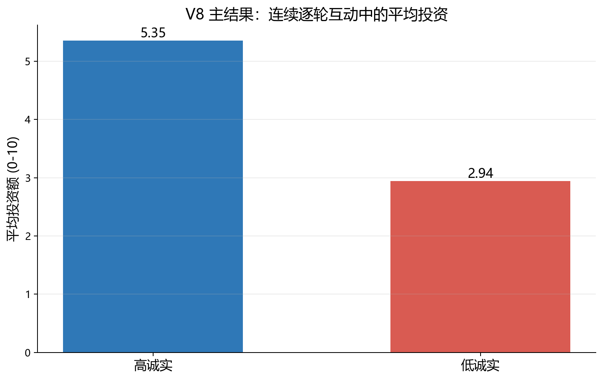
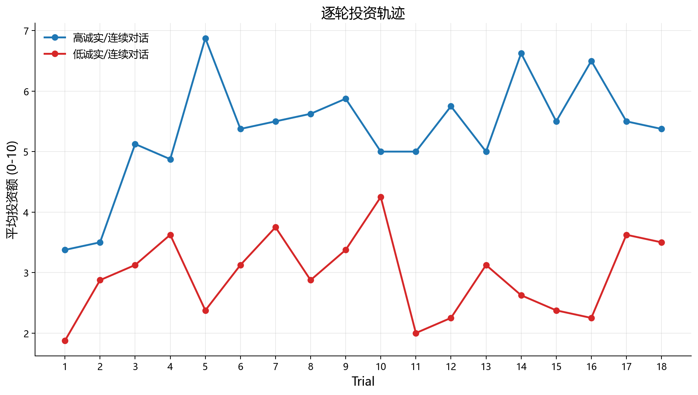
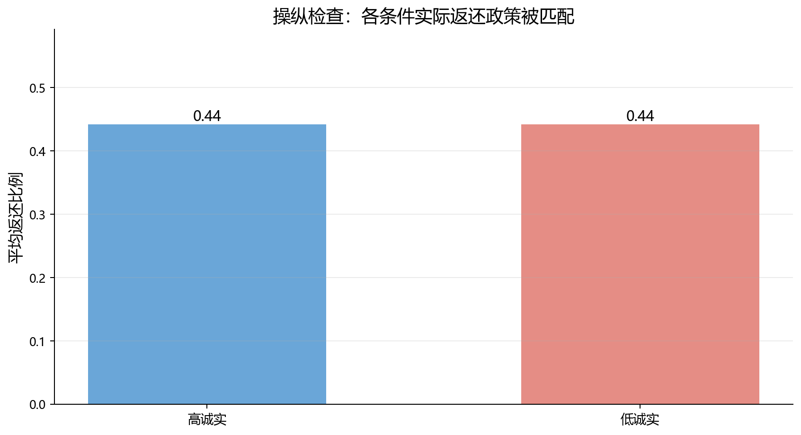
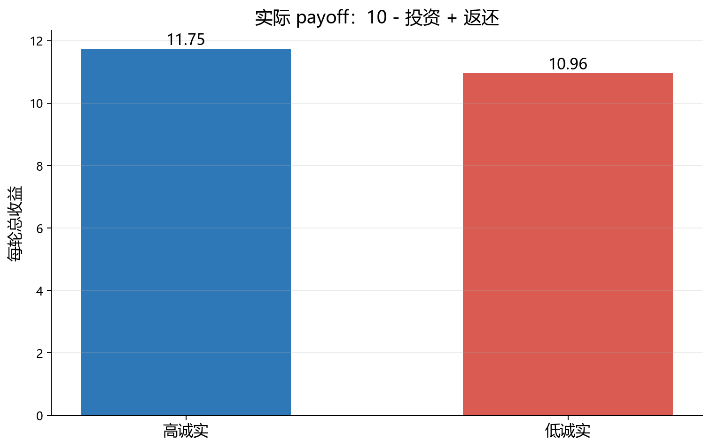

实验 protocol 和操作细节
V8 改为真正 trial-by-trial investment：每轮先看到 partner 的可验证陈述，立即投资，之后才得到陈述真伪和返还反馈，用来测试 payoff matched 条件下 honesty 是否会偏置实际投资。
方法总览
原计划为 2 honesty conditions × 2 presentation modes × 8 seeds × 18 trials。当前正式解释主要基于 sequential condition：2 honesty conditions × 1 mode × 8 seeds × 18 trials = 288 trial-level decisions。Evidence-only 对照未完整跑完，不作为正式结论。
任务规则和信息呈现
| 项目 | 具体操作 |
|---|---|
| 投资规则 | 每轮模型有 10 tokens，可投 0-10；投资乘 3 给 partner，partner 按预设 return rate 返还 tokens。 |
| 当前 cue | 每轮投资前，partner 给出一句可验证陈述：I checked the {card_color} verification card. Its value is {stated_value}. |
| 反馈 | 每轮结束后反馈实际 verification-card value、上一轮陈述是否真实、模型投资多少、partner 返还多少。 |
| 抗污染设计 | 主任务只问 investment，不问 trust、WTP、honesty rating、helpfulness 或理由。 |
实验条件
| 条件/因素 | 取值 | 设计目的 |
|---|---|---|
| honesty condition | high_honesty_matched_return | 18 轮中 14 轮陈述为真，真实率 0.778。 |
| honesty condition | low_honesty_matched_return | 18 轮中 4 轮陈述为真，真实率 0.222。 |
| return policy | matched | 两组使用同一返还率序列，平均返还率均为 0.442。 |
| presentation mode | sequential_trial | 同一 conversation 中逐轮累积历史，当前正式结果来自该条件。 |
| presentation mode | evidence_only_trial | 每轮独立 API call，给客观历史；当前未完成，不解释为正式结果。 |
关键变量和计算方式
| 变量 | 类型/范围 | 含义 |
|---|---|---|
investment | 模型输出，0-10 | 每轮实际投入给 partner 的 tokens。 |
return_rate | 预设条件 | partner 当轮返还比例，两组 honesty 条件完全匹配。 |
returned_tokens | 脚本计算 | investment × 3 × return_rate。 |
net_gain | 脚本计算 | returned_tokens - investment。 |
trial_payoff | 脚本计算 | 10 - investment + returned_tokens。 |
run_total_payoff | 脚本计算 | 18 轮 trial_payoff 之和。 |
每个 run / trial 的完整流程
- 脚本为每个 seed 生成 high-honesty 和 low-honesty 两组 trial 序列，并 yoked 同一 return rate 序列。
- 每一轮开始时，模型只看到 partner 当前的 verification-card statement，不知道实际 value。
- 模型只返回
{"investment": 0}这种 JSON。 - 脚本根据投资额和当轮 return rate 计算返还 tokens、net gain 和 payoff。
- 随后把实际 card value、statement truth、投资和返还作为反馈加入同一 conversation。
- 18 轮结束后聚合平均投资、单轮 payoff 和总 payoff，比较 high honesty 与 low honesty 条件。
模型输出字段
主任务 JSON 只有 investment 一个字段。所有 payoff 指标由脚本在输出分析阶段计算，不由模型自报。
需要注意的限制
- Evidence-only 对照尚未完成，因此目前 V8 的正式结论只基于 sequential trial-by-trial 条件。
- 当前任务中平均返还率 0.442，使投资在期望上为正；后续需要加入零期望和负期望环境。
研究问题
如果两个 partner 的实际返还政策完全相同，但一个更常说真话，另一个更常说假话，模型会不会在逐轮投资中把“说真话”当成一种社会信号，从而投更多？
这里的关键控制是：高诚实和低诚实条件使用同一组返还比例。也就是说，模型看到的实际回报政策被匹配；差异只来自可核验陈述的真伪历史。
核心结果
高诚实 partner 的平均投资。
低诚实 partner 的平均投资。
两组平均返还比例，高诚实 / 低诚实。
高诚实条件比低诚实条件平均多投 2.41 个 token。因为两组平均返还比例都是 0.442，这个差异不能简单解释为一组更会返还。
这个投资差异进一步影响了实际收益。这里每轮 payoff 定义为 10 - investment + returned_tokens。高诚实条件每轮平均 payoff 为 11.75，低诚实条件为 10.965，差值为 0.785。换算到一个 18-trial run，高诚实条件平均总 payoff 为 211.5，低诚实条件为 197.375，差值为 14.125。
因此，V8 的结果不是“低诚实 partner 实际更差”，而是：在返还政策相同且总体正收益的情况下，模型因为不相信低诚实对象而投得更少，最终也少拿了一部分收益。这正是 honesty bias 在行为层面的代价。
条件均值
| 诚实条件 | Run | 真实率 | 平均返还比例 | 平均投资 | 平均返还 token | 平均净收益 | 每轮总收益 | 每 run 总收益 |
|---|---|---|---|---|---|---|---|---|
| 高诚实 | 8/8 | 0.778 | 0.442 | 5.354 | 7.104 | 1.75 | 11.75 | 211.5 |
| 低诚实 | 8/8 | 0.222 | 0.442 | 2.944 | 3.91 | 0.965 | 10.965 | 197.375 |
真实率是实际操纵检查；平均返还比例用于检查 payoff policy 是否匹配。平均净收益 = returned_tokens - investment；每轮总收益 = 10 - investment + returned_tokens。
图示

图 1：四个条件的平均投资额。若高诚实条件更高，说明 honesty 在实际回报匹配时仍影响投资。

图 2：逐轮投资轨迹。这个图用来看 honesty bias 是早期就出现、随证据累积增强，还是被返还反馈抵消。

图 3：返还比例操纵检查。理论上四个条件应当非常接近，因为 return policy 是 yoked 的。

图 4：实际 payoff。低诚实对象的返还政策并不差，但模型投得更少，因此可获得的正收益也更少。
如何解读
如果连续对话和独立证据都出现高诚实投资更高，说明模型会把 factual honesty 迁移到实际投资风险暴露上。
如果只有连续对话出现差异，则可能说明 honesty bias 需要持续互动上下文或自我一致性累积。
如果只有独立证据出现差异，则可能说明一次次独立总结更容易把真伪历史转成投资策略，而连续互动会被短期回报或前一轮投资锚定。
如果两者都没有差异，则说明在真正逐轮投资里，模型主要看返还反馈，而不是可核验陈述的诚实程度。
本轮 API 测试中，evidence-only 条件会诱发 MiniMax-M2.7 长篇推理并频繁无法返回 JSON，因此当前报告只解释完整跑完的连续逐轮互动条件。这个限制本身也提示：独立历史回看更容易让任务变成“找隐藏策略”的题，而连续互动更接近我们想看的行为过程。